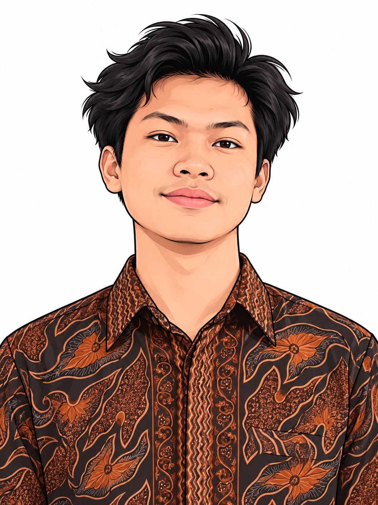
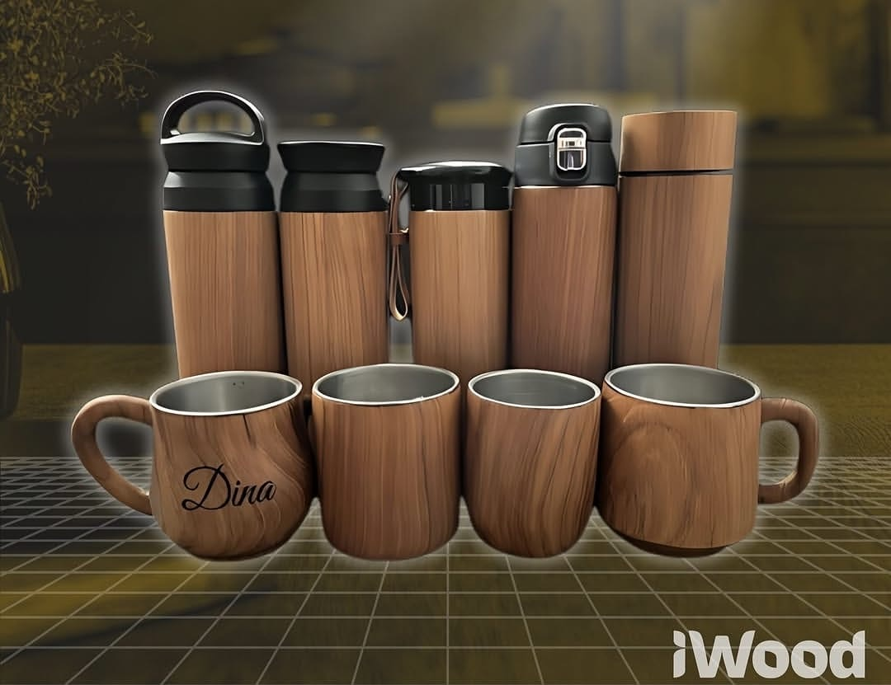
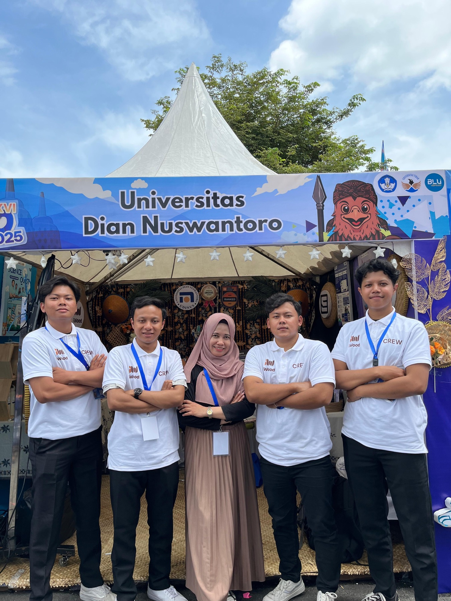

Bollo Coffee
Barista
Menyiapkan minuman dan melayani pelanggan di lingkungan F&B. Pengalaman ini memperkuat ketelitian, komunikasi, dan perhatian pada pengalaman setiap tamu.
Personal Portfolio Pati, Indonesia
Mexi Milianus · meximlians
Kopi Nikmat, Teman Setiap Cerita.
Barista dengan bekal ilmu manajemen, pengalaman di dunia pelayanan, dan ketertarikan untuk terus belajar tentang bisnis serta kewirausahaan.

Tentang Saya
Saya menyukai dunia kopi dan pertemuan yang lahir di sekitarnya. Sebagai barista, saya belajar bahwa pengalaman yang baik dibangun dari perhatian pada detail dan hubungan yang hangat dengan pelanggan.
Bekal studi Manajemen memberi saya cara pandang tentang pengelolaan bisnis dan operasional. Rasa ingin tahu itu membawa saya untuk terus belajar, termasuk merintis I WOOD bersama teman kuliah dan mengeksplorasi peluang usaha.
Ke depan, saya ingin membangun dan mengelola bisnis sendiri. Untuk saat ini, saya menikmati prosesnya: mengasah keterampilan, memahami kebutuhan orang, dan mencari ruang untuk berkembang.
Perjalanan Profesional
Berbagai peran mengajarkan saya tentang ritme operasional, kerja tim, dan melayani dengan baik.
Barista
Menyiapkan minuman dan melayani pelanggan di lingkungan F&B. Pengalaman ini memperkuat ketelitian, komunikasi, dan perhatian pada pengalaman setiap tamu.
Waiter
Pengalaman kerja
Pati
Bagian gudang
Tanggal kerja tidak dicantumkan karena belum tersedia.
Latar Belakang
Perjalanan pendidikan yang membentuk dasar untuk terus bertanya, mengamati, dan belajar.
Program Studi Manajemen
Tahun pendidikan dan status studi belum dicantumkan.
Hal yang Saya Bawa
Kumpulan kemampuan yang saya gunakan dan terus asah dari pengalaman kerja maupun studi.
Belajar di tempat kerja, di kelas, dan bersama orang lain.
Eksplorasi & Inisiatif
Dari ide produk hingga pertanyaan tentang siapa yang akan menggunakannya.

PROJECT / 01 · PRODUK I WOODTUMBLER & GELAS KAYU
Entrepreneurship / Woodcraft Business
Bisnis kerajinan kayu yang saya rintis bersama teman kuliah, berfokus pada produk berbahan kayu—terutama tumbler dan gelas dari kayu jati.
Prosesnya mencakup pengembangan ide, perencanaan produk, pengelolaan usaha, eksplorasi peluang pasar, dan kreativitas dalam mengembangkan produk. Pengalaman ini memberi saya pemahaman praktis tentang kewirausahaan dan manajemen bisnis.
Lihat perjalanan kewirausahaanBusiness Concept · Business Exploration
Eksplorasi ide bisnis makanan dan minuman melalui penyusunan konsep, target pasar, strategi pemasaran, serta gambaran pengelolaan operasional.
Langkah Kewirausahaan
Perjalanan I WOOD membuka ruang untuk belajar dan mengikuti program kewirausahaan mahasiswa.
Program Pembinaan Mahasiswa Wirausaha
Berhasil meraih prestasi dalam program P2MW melalui pengembangan bisnis I WOOD di bidang kerajinan kayu.
Kewirausahaan Mahasiswa Indonesia Expo
Berhasil lolos sebagai peserta KMI Expo melalui program pengembangan kewirausahaan mahasiswa dengan membawa bisnis I WOOD.
Belajar melalui praktik
Pengalaman merintis dan mengembangkan ide bisnis, dari perencanaan produk hingga eksplorasi peluang pasar.
Catatan dalam Gambar
Beberapa momen dari kegiatan kewirausahaan dan aktivitas di lapangan.
Mari Terhubung
Untuk percakapan, kolaborasi, atau sekadar bertukar cerita, saya terbuka untuk terhubung.
Kirim Email